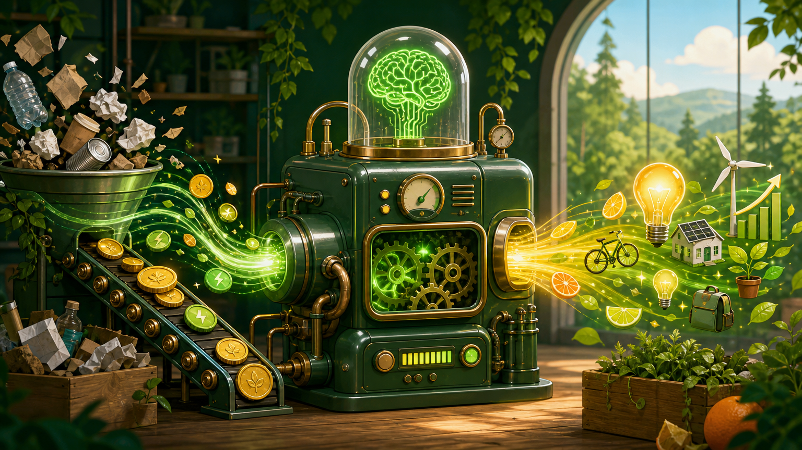
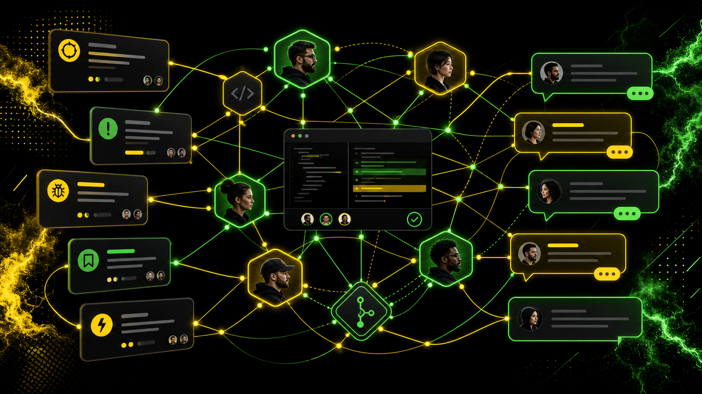
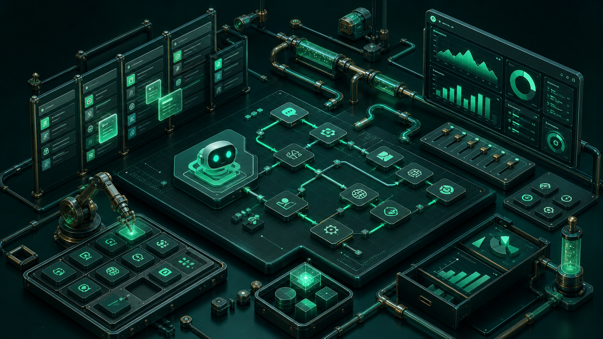
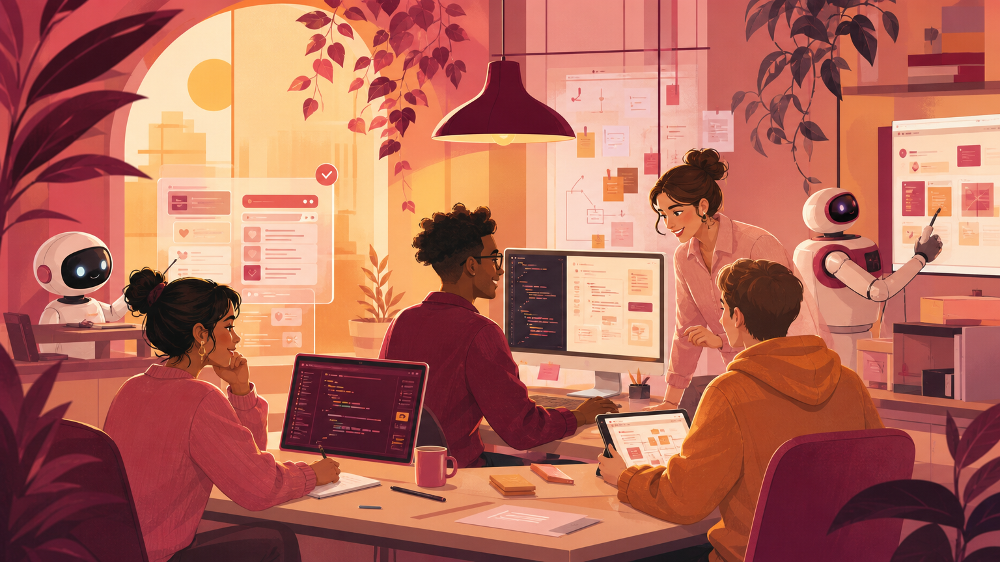

Perf focus on every part of VS Code
- Rewrite the renderer and chat model
- Loading/switching AH chat sessions must be instant
Simplify and clean up the product
- Align VS Code/Agents interfaces: Implement one interface -> agents show up
- Delete everything except agent host

How can we save users money?
- Drive a narrative that the harness matters, and has good value
- Custom models, subagents, other harness tricks
One subscription, every agent harness
- Think more about extensibility with agent harnesses beyond our built-in integrations

Github integration
- Cross-linking github issues and chat sessions
Cloud agents
- GH service with AHP offering cloud compute
- Tighter integration with CCR

Make agents programmable
- AHP as API surface
- Publish a TS SDK for AHP
- Make it easy to build a kanban interface, agent orchestration, or any other kind of integration with my own chat sessions, via AHP

Our team's work
- More agentic dev processes
- Computer-use/agent running code-oss
- More agentic inbox triaging